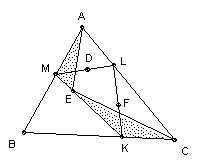

ABC is a triangle. K, L, M are points on the sides BC, CA, AB respectively. D, E, F are points on the sides LM, MK, KL respectively. Show that (area AME)(area CKE)(area BKF)(area ALF)(area BDM)(area CLD) ≤ (1/8 area ABC)6.
Solution

area AME/area ABC = (area AME/area AMK) (area AMK/area ABK) (area ABK/area ABC) = (ME/MK) (AM/AB) (BK/BC). So, by the AM/GM inequality, we have (area AME/area ABC)1/3 ≤ (1/3) (ME/MK + AM/AB + BK/BC).
Similarly, area CKE/area ABC = (area CKE/area CKM) (area CKM/area CBM) (area CBM/area CBA) = (KE/MK) (KC/BC) (MB/AB), and hence (area CKE/area ABC)1/3 ≤ (1/3) (KE/MK + MB/AB + KC/BC).
Adding, we get (area AME)1/3 + (area CKE)1/3 ≤ (area ABC)1/3. Similarly for the other pairs. So if we denote the areas of the 6 small triangles as Ai, we have ∑ Ai1/3 ≤ 3 (area ABC)1/3. Now applying AM/GM again we get ∑ Ai1/3 ≥ 6 (∏ Ai1/3)1/6. So (area ABC)1/3 ≤ 2 (∏ Ai1/3)1/6. Cubing gives: (∏ Ai)1/6 <= (1/8) area ABC.

© John Scholes
jscholes@kalva.demon.co.uk
30 Dec 2002
Last corrected/updated 30 Dec 02